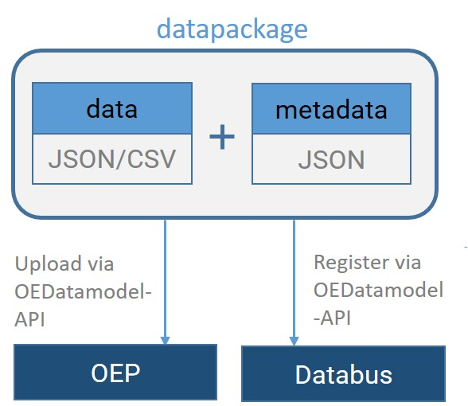

Overview of the SEDOS data architecture¶
This section provides an introductory overview of SEDOS' data architecture and its elements, which you will find explained more detailed in further parts of the documentation.
In the SEDOS project data is collected, preprocessed and published by work packages (WPs) 4 to 8. Therefore, partners working in WPs 4-8 create multiple input data datapackages and upload them to the OEP via the OEDatamodel-API. By applying the described data architecture, we follow the frictionless data conventions. Everytime new data is uploaded to the OEP, the partners also have to register the new data version on the databus via the OEDatamodel-API. By this process, the latest versions from all WPs are available on the databus in order to be further processed by the SEDOS pipeline. Input datapackages generated and published by WP 4-8 will be automatically checked for updates and processed to one datapackage holding all input data by the SEDOS Data Pipeline. This input datapackage will also be published on the OEP. The partners in WP9 will then download the input datapackage from the OEP and use it to set up, parameterize and solve their energy system model. The modelling results will be postprocessed and uploaded to the OEP by the partners of WP9.
A generalized representation of a datapackage is shown in the figure below. A datapackage consists of:
- data - containing parameters and values for modelling, and
- metadata - describing the structure of the datamodel, and providing context to the data.
